Voici notre programme pour les 6 prochaines années. Il s'agit de propositions et leur réalisation est conditionnée à plusieurs points :
Concevoir et faire ensemble est le plus beau des projets.
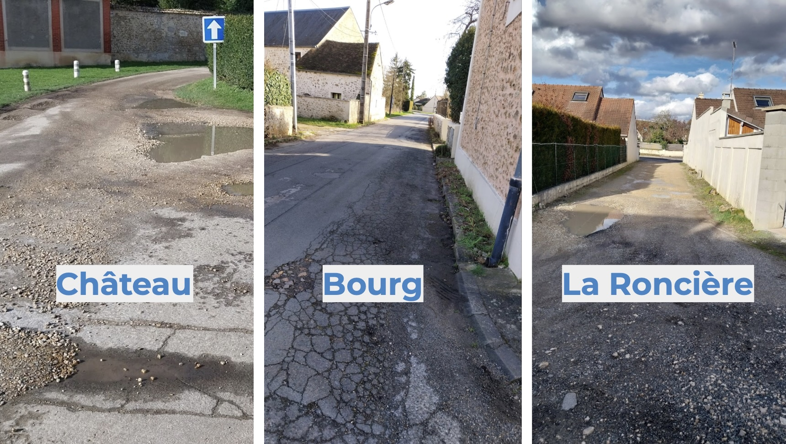
Nous souhaitons que chaque partie de notre village, sans exception, puisse voir sa voirie entretenue. C'est pourquoi la réfection des routes est une priorité pour nous. Elle mérite un vrai budget, pour tous.
L'ordre de grandeur du budget pour les routes dépasse 200 000 €. Grâce au contrat rural, la région et le département financeront 140 000 € de ces travaux. Une subvention importante et unique que nous ne raterons pas. Nous ferons des choix et des priorités.
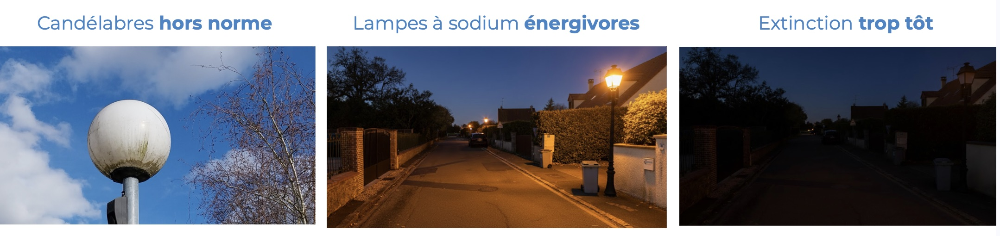
Le consensus est clair : l'éclairage public est éteint trop tôt. Pour résoudre ce problème tout en faisant des économies, nous proposons le remplacement du parc de candélabres à lampes à sodium par un parc 100% LED, et le remplacement des candélabres rue de l'Horloge et du hameau Marianne qui ne sont plus conformes à la réglementation imposant l'éclairage vers le sol.
Ces travaux pourront bénéficier de subventions importantes du département et de la région, prévues exclusivement pour la modernisation de l'éclairage public.
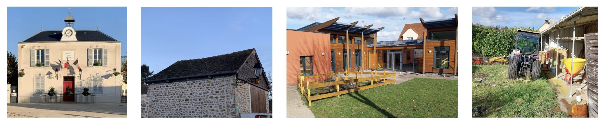
Le bon fonctionnement de notre commune nécessite une maintenance régulière de ses installations et équipements. La liste est longue et comporte actuellement au moins 300 000 €. Nous ne pourrons pas tout faire, mais notre démarche est claire :
Aujourd'hui, la cour de notre école est entièrement bétonnée, exposée en plein soleil, sans ombre, sans verdure. L'été, la chaleur y devient difficilement supportable pour nos enfants.
👉 Si notre liste est élue, nous transformerons cette cour en véritable cour oasis.
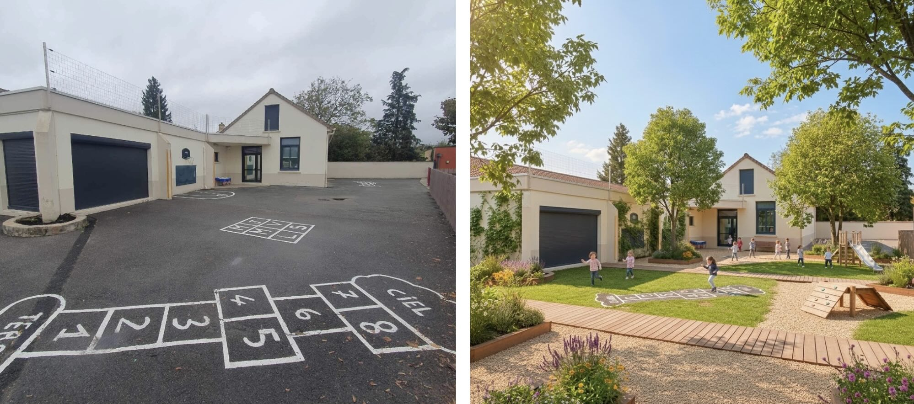
D'une cour d'école triste, bétonnée, en plein soleil à une cour ludique, végétalisée, ombragée où les enfants s'épanouissent.
Une cour plus agréable, c'est une école où l'on se sent bien.
Et un enfant qui se sent bien apprend mieux.
Ce projet est l'un des engagements forts de notre liste, et comme les autres, nous voulons qu'il nous rassemble. Il sera co-conçu :
Parce que construire ensemble notre avenir est le meilleur moyen de mieux se connaître, d'apaiser les relations et d'être fiers, ensemble, de notre école et de notre village.
✅ Nous avons déjà engagé des discussions avec les partenaires techniques et financiers qui encadrent ce type de réalisation.
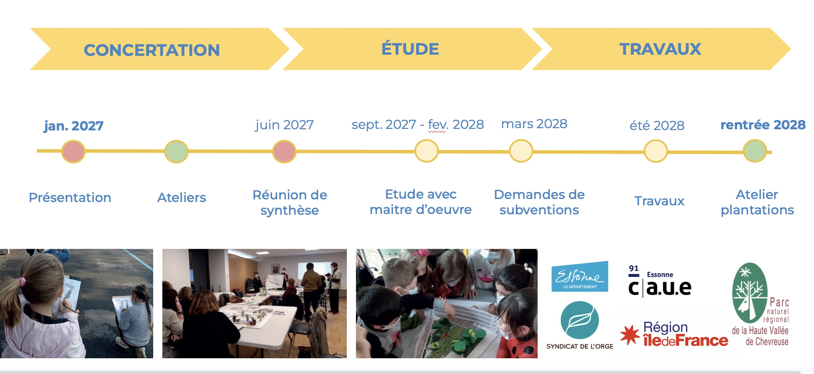
L'organisation de ce projet est encadrée par le Conseil d'Architecture, d'Urbanisme et de l'Environnement (CAUE) de l'Essonne, et le Syndicat de l'Orge. Leur expérience est importante car ils ont réalisés de nombreux projets similaires dont la cour oasis de l'école de Fontenay-les-Briis dernièrement. Un tel projet s'étale typiquement sur un an et demi (les années sur la figure sont indicatives de cette temporalité). Des ateliers se tiendront avec les enfants, racontant l'usage de leur cour actuelle et imaginant l'usage de leur cour future, et avec les parents, la mairie et l'école, chacun apportant ses idées. Après une réunion de synthèse au cours de laquelle est proposé un projet réaliste, la mairie choisit ses prestataires, puis, avec l'aide du Syndicat de l'Orge, trouve les subventions nécessaires et engage les travaux pendant la période estivale où les enfants sont absents.
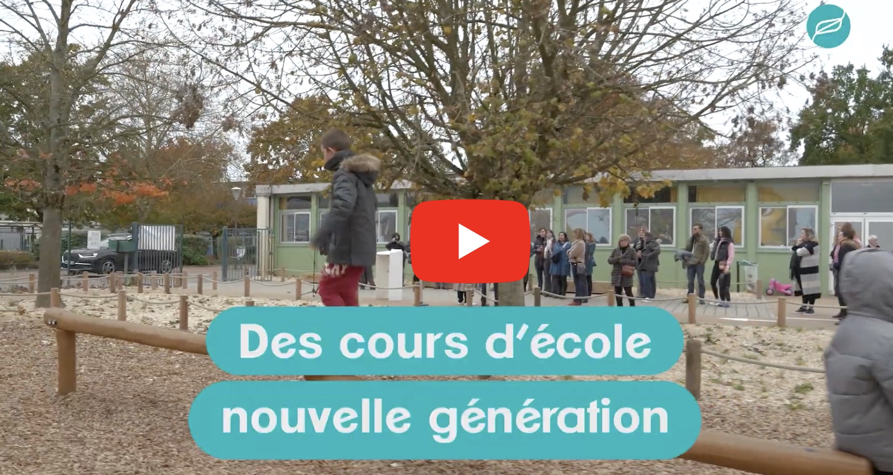
Cliquer pour voir la vidéo
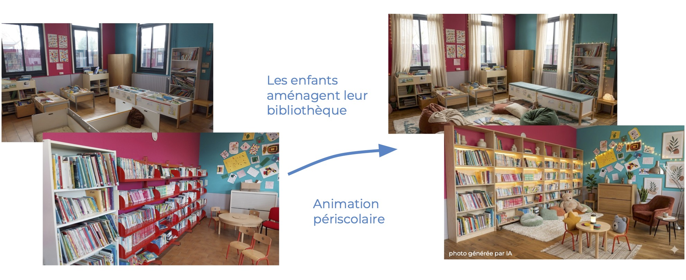
Nous souhaitons réaménager la bibliothèque de l'école avec les enfants, pour qu'ils s'épanouissent dans un lieu qui donne envie de lire, dans le calme et l'apaisement. C'est un projet peu cher qui sera réalisé avec les enfants.
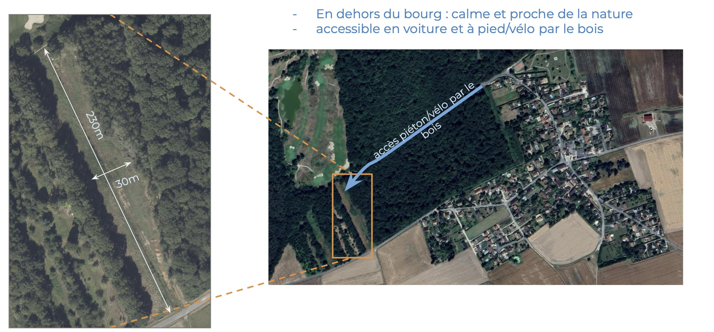
Notre commune a récemment acquis des parcelles entre le golf et la route vers Saint-Maurice-Montcouronne. Nous souhaitons valoriser l'une d'elles pour la transformer en parc de la biodiversité.
À l'écart du village, n'occasionnant aucune nuisance sonore, ce parc, proche de la nature, serait traversé par un sentier ludique allant d'un espace de pique-nique et de jeu, à un espace d'observation de la faune et de la flore locale, pour finir par un verger communal au sein duquel chaque enfant aura son arbre.
Le parc sera accessible à pied et à vélo via le chemin traversant le bois, et en voiture par la route, avec un parking sur sol végétalisé où pourraient être disponibles des bornes d'apport volontaire pour nos déchets.
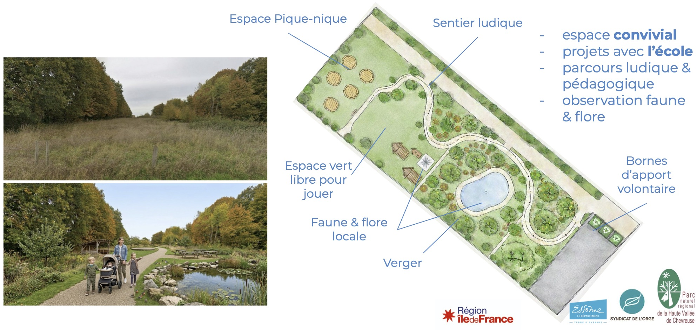
Comme pour tous les autres projets, les propositions que nous faisons ici seront discutées dans le cadre de réunions publiques. Nous ferons un appel à idées pour co-concevoir cet endroit agréable pour tous, des enfants aux séniors. Ce projet pourra bénéficier de subventions de la part de la région et du département, avec lesquels nous sommes déjà en contact.
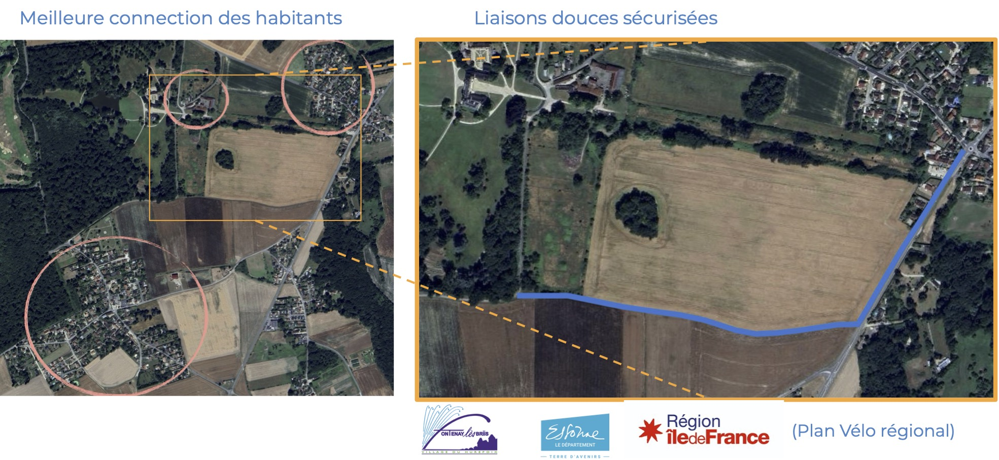
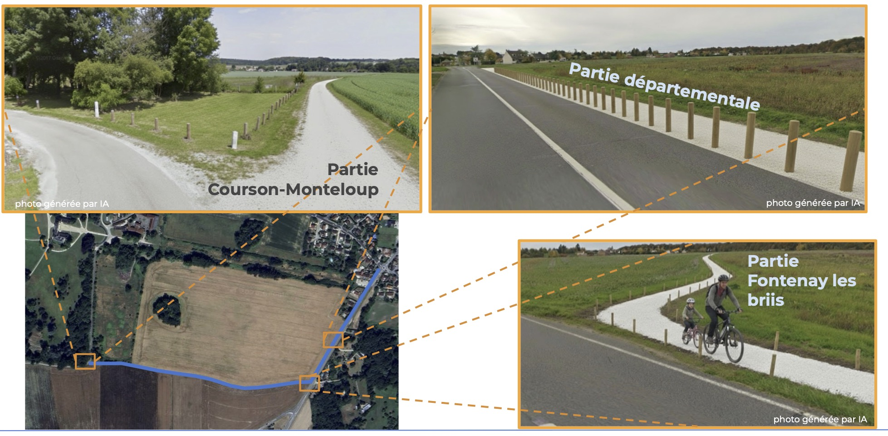
Accéder aux installations (parc de loisirs, mairie, parc de la biodiversité, etc.) à vélo ou à pied est important mais n'est à ce jour pas réalisable pour tous. Nous étudions la réalisation d'un projet de liaison douce reliant nos trois pôles d'habitation. Nous avons à ce jour deux propositions à l'étude.
La première, représentée sur les images ci-dessus, emprunterait la bordure de la D3, aménagée dans le cadre d'un partenariat avec le département de l'Essonne, et se continuerait sur un aménagement du chemin communal sur Fontenay-les-Briis puis Courson-Monteloup pour rejoindre la route piétonne arrivant rue du Parc. Les autres bordures de route départementale étant des terrains privés (e.g. rue des Bruyères sortant de la Roncière pour rejoindre la rue de la Ferme vers le Château), ils nous sont inaccessibles.
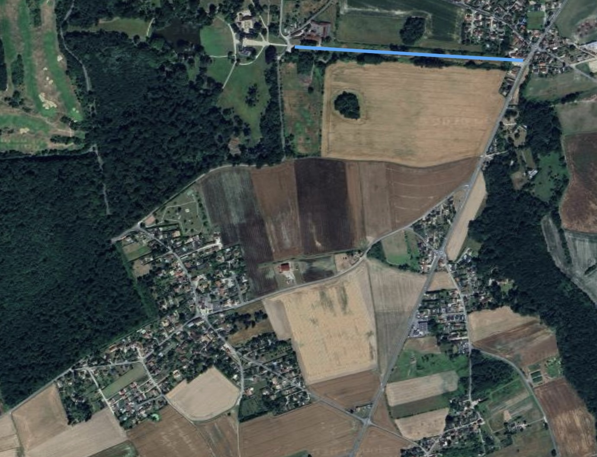
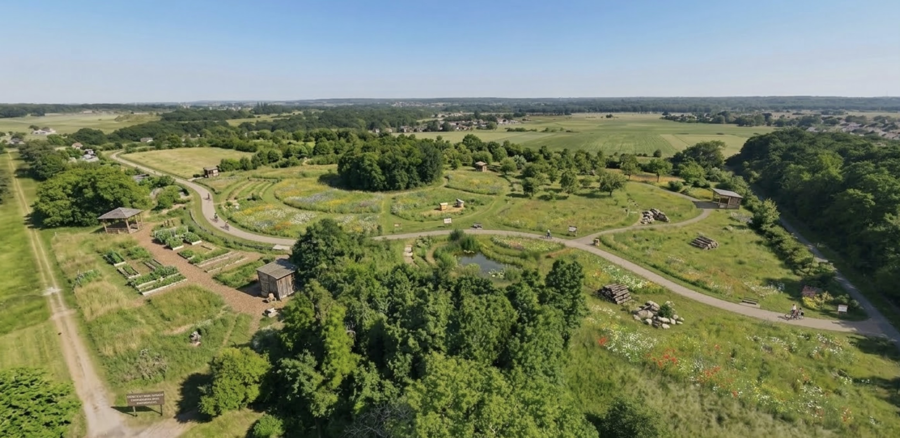
Une autre solution pourrait être d'aménager et d'emprunter l'allée du Château, plus directe. Ce terrain est cependant privé et nous discuterons prochainement avec le nouvel acquéreur de la propriété, qui nous a d'ores et déjà manifesté l'envie de travailler avec la commune.
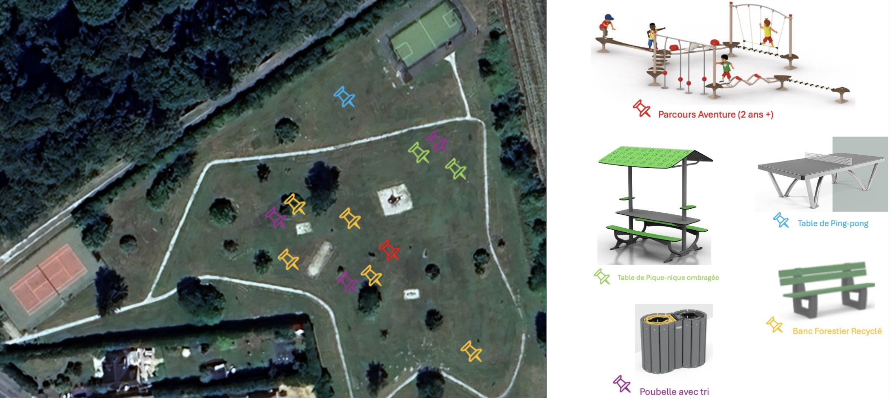
Le parc de loisirs est un endroit privilégié apprécié des habitants, mais qui pourrait être mieux aménagé.
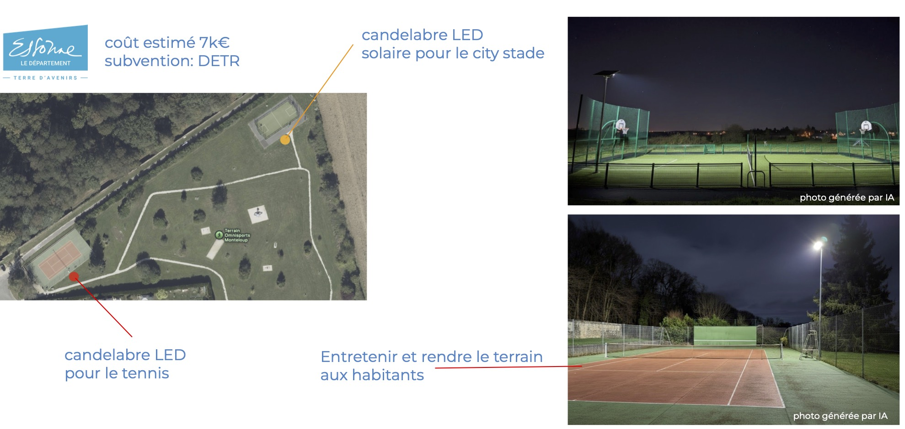
Nos installations pourraient être davantage utilisées. Hors belle saison, la nuit tombe très vite. Nous pourrions éclairer le city-stade jusqu'à 21h — pas trop tard pour éviter les attroupements tardifs — via un candélabre solaire autonome, hors réseau. De même, nous proposons l'éclairage et l'entretien du terrain de tennis, une belle installation aujourd'hui sous-utilisée, que nous souhaitons rendre accessible à tous les habitants du village.
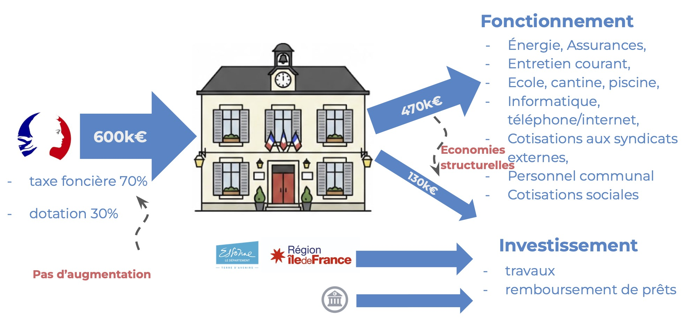
Le budget de la commune est d'un peu moins de 600 000 € en moyenne depuis 10 ans. Environ 470 000 € sont destinés au fonctionnement de la commune, et seuls 130 000 € sont disponibles pour l'investissement, sur lequel les travaux sont financés. Sur ce budget investissement, 30 000 € de remboursement de prêt déjà en cours s'étaleront d'ores et déjà sur la durée du mandat. Il nous reste 100 000 € par an pour réaliser nos projets.
Il nous faudra donc, dans un contexte où nous n'augmenterons pas les impôts :
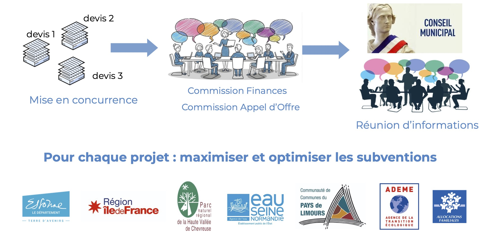
Notre méthode est claire : après une mise en concurrence rigoureuse et sur la base de plusieurs offres, la commission finances sera en charge de choisir la meilleure proposition et d'obtenir les subventions nécessaires, sans quoi le projet ne sera pas réalisé. Nous irons chercher les subventions !
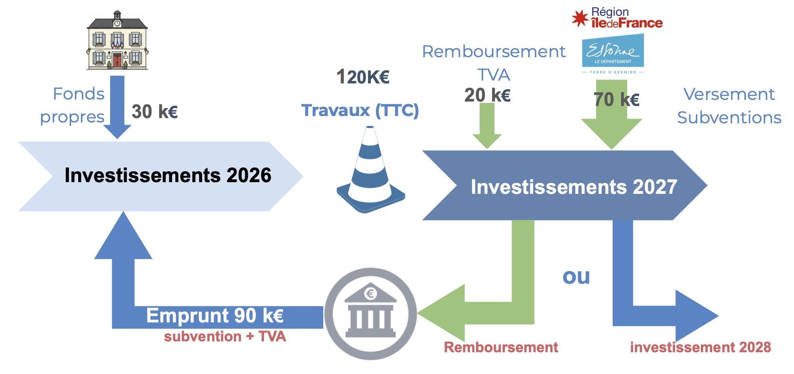
Sur un exemple de projet à 100 000 € HT subventionné à 70 % (exemple de la subvention « contrat rural » de la région et du département), la commune ne financera que 30 000 €. Le recours à l'emprunt initial sera intégralement équilibré par le remboursement de la TVA par l'État et le versement de la subvention une fois les travaux réalisés. Nous maîtriserons les finances et, à chaque étape, nous aurons le choix de rembourser intégralement sans avoir recours à un emprunt supplémentaire.
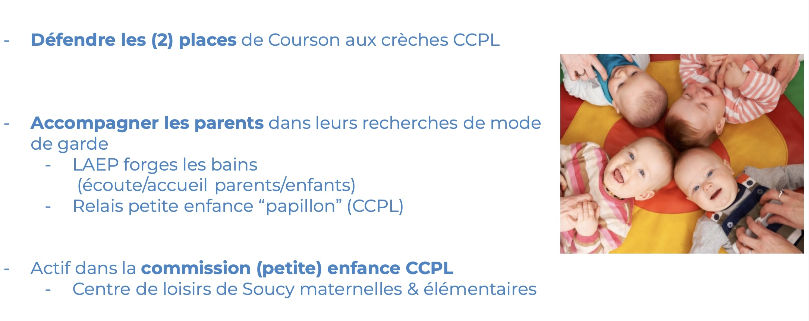
Nous nous engageons à aider les parents ou futurs parents dans leurs démarches d'obtention d'un moyen de garde, et à être actifs dans les commissions enfance et petite enfance de la communauté de communes, en défendant les places de crèche attribuées à Courson‑Monteloup.
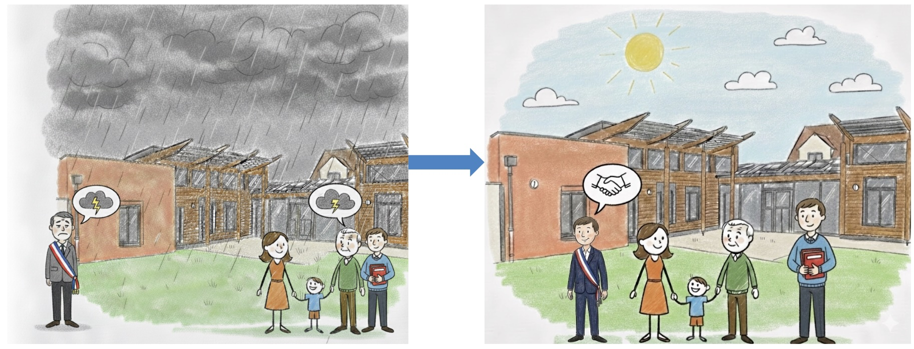
Nous nous engageons à rétablir un cercle de confiance entre tous les acteurs de l'école. Pour cela :
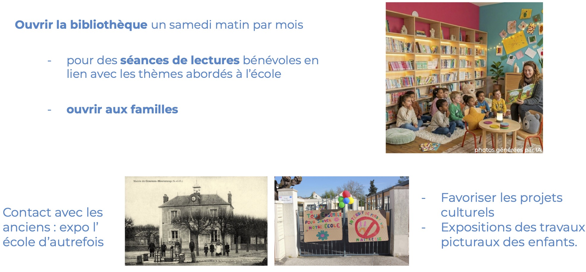
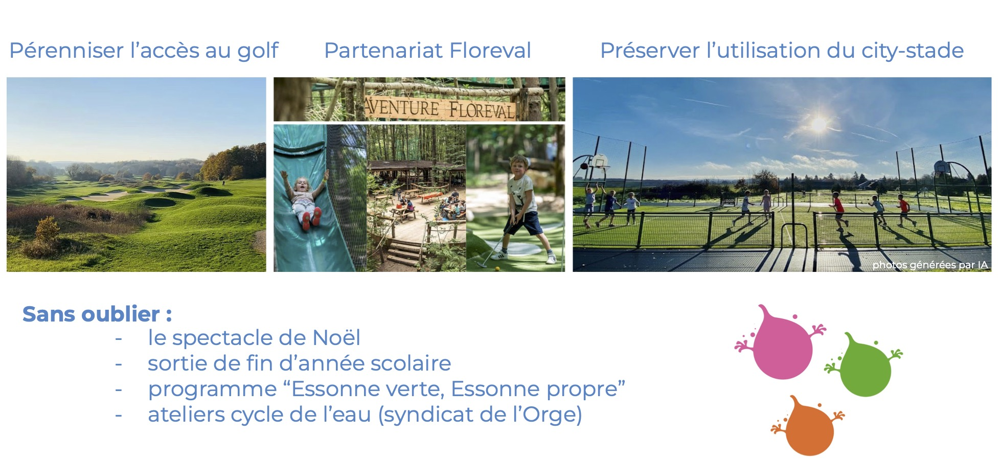
Nous serons moteurs dans la valorisation des projets artistiques des enfants, et proposerons des projets en collaboration avec la mairie et les habitants. Un exemple qui nous tient particulièrement à cœur : créer un lien intergénérationnel où enfants et séniors pourraient concevoir ensemble une exposition autour de Courson et de l'école autrefois. Ce projet pourrait s'inscrire dans notre souhait de fêter les 150 ans de l'école (voir plus bas).
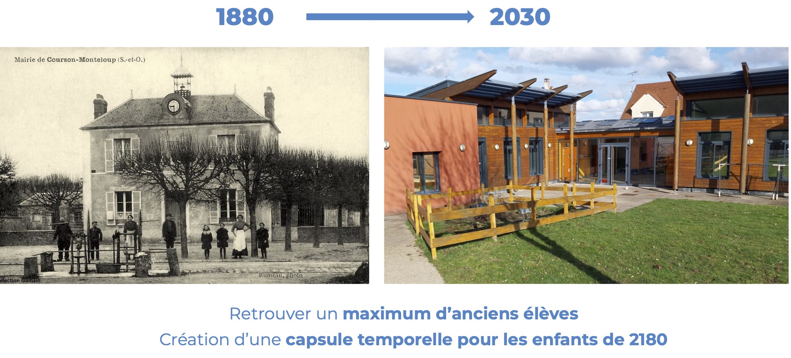
En 2030, la mairie‑école fête ses 150 ans ! Pour cette occasion unique, nous souhaitons organiser un événement majeur qui nous réunira tous. Cet événement sera co-organisé avec les habitants et avec les enfants. Nous essaierons de retrouver un maximum d'anciens élèves de l'école, et inviterons nos séniors à nous raconter le Courson d'autrefois.
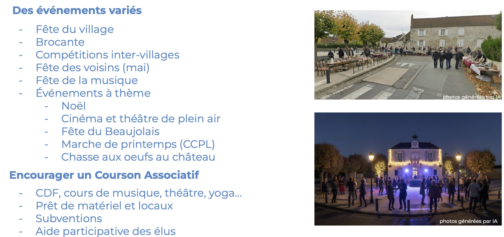
Nous travaillerons pour faire revivre notre village. Les élus seront désignés volontaires pour assister le comité des fêtes dans les événements divers. Nous encouragerons les associations à s'établir à Courson‑Monteloup, via le prêt de matériel et de locaux si nécessaire. Dans le cas où l'association sert les habitants, le conseil municipal pourra lui accorder une subvention.
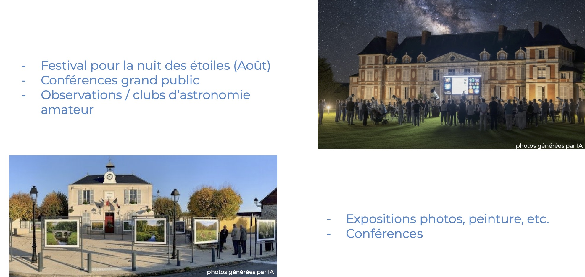
Nous pourrions par exemple organiser, pour la « Nuit des étoiles » — généralement mi‑août — un événement « Courson sous les étoiles » au château : un festival d'astronomie où des clubs amateurs apportent leur matériel, des astrophysiciens viennent donner des conférences grand public, et des télescopes sont mis à disposition des habitants.
Nous pourrons également organiser des expositions, au château et/ou sur la place de la mairie.
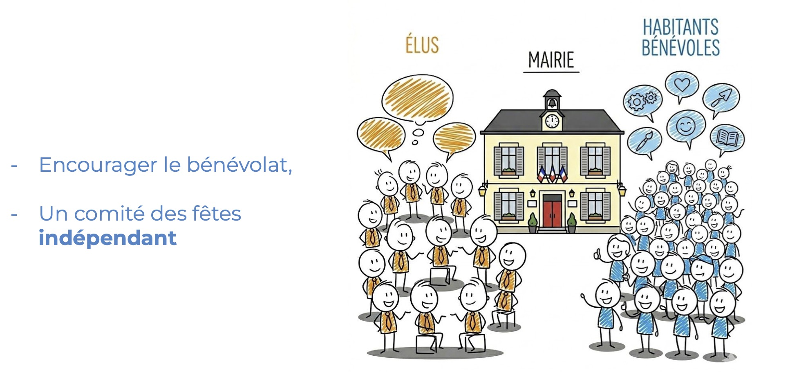
Si tous les élus aideront, ils ne pourront pas tout faire. Nous aurons besoin de bénévoles nombreux dans le village. Nous mobiliserons les habitants et encouragerons un comité des fêtes indépendant, libre de ses actions et de son budget.
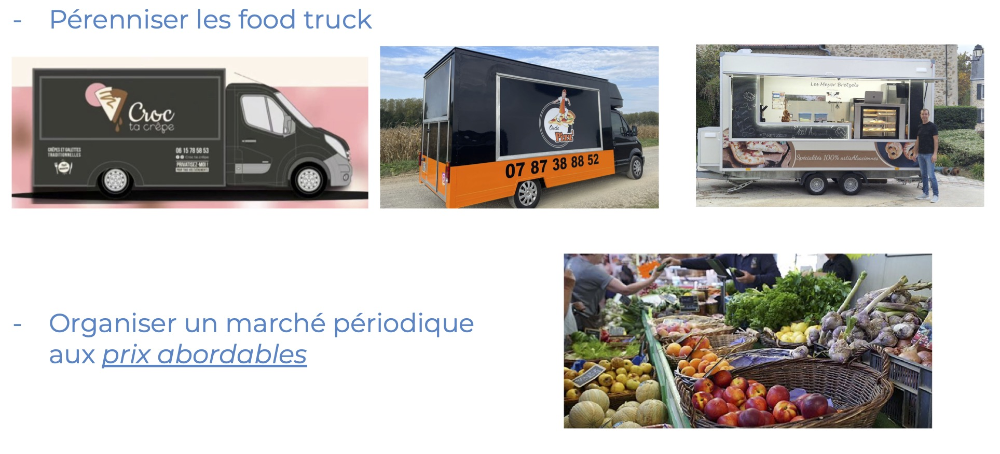
Nous pérenniserons les lieux de rencontre que sont les food trucks sur la place du village, et étudierons la possibilité d'avoir un marché périodique aux prix abordables.
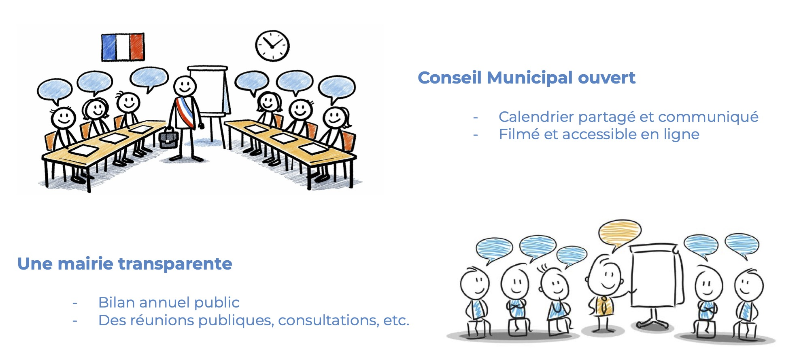
La transparence est notre valeur cardinale. Le conseil municipal est en théorie ouvert à tous — nous le ferons en pratique. Les dates seront communiquées largement en avance, sur tous nos moyens de communication. Nous filmerons les élus (et uniquement les élus) en séance, et les vidéos seront accessibles à tous. Chaque année, nous ferons avec vous un bilan des actions réalisées, dans le cadre d'une réunion publique et au regard du budget avancé.
Dans le cadre de tous nos projets, nous associerons les habitants au démarrage et aux différents jalons des projets, pour choisir, concevoir et suivre leur réalisation.
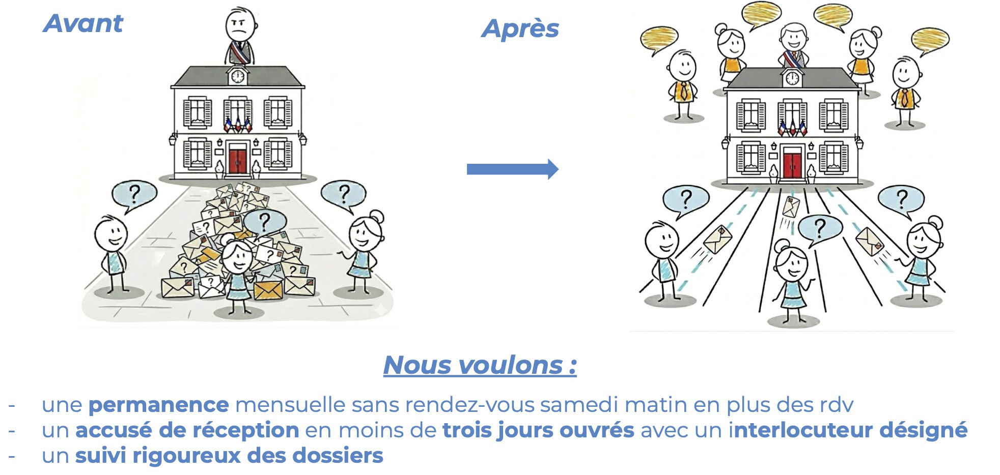
Nous changerons le fonctionnement de la mairie en profondeur. Les demandes qui n'aboutissent pas ou trop tard, c'est terminé. En plus de la disponibilité des élus pour des rendez-vous avec les habitants, nous organiserons une permanence par mois en mairie.
Vos demandes recevront un accusé de réception en trois jours ouvrés, associé au nom d'au moins un élu en charge de votre dossier. Nous assurerons un suivi régulier et sérieux.
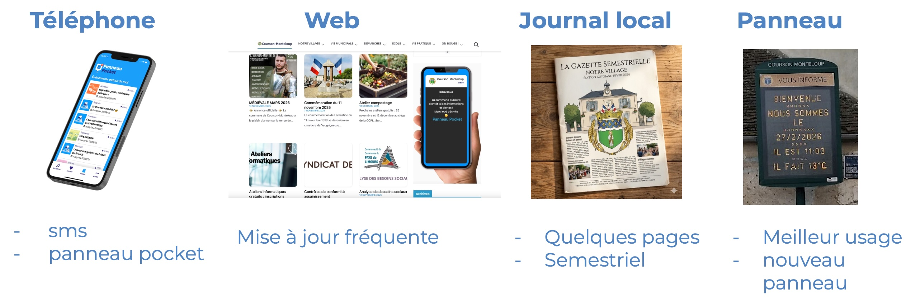
Nous utiliserons tous les moyens de communication adaptés, de la communication urgente aux bilans annuels, du téléphone portable au site, en passant par un retour du journal papier local — quelques pages résumant les événements et actions déroulées sur une base semestrielle.
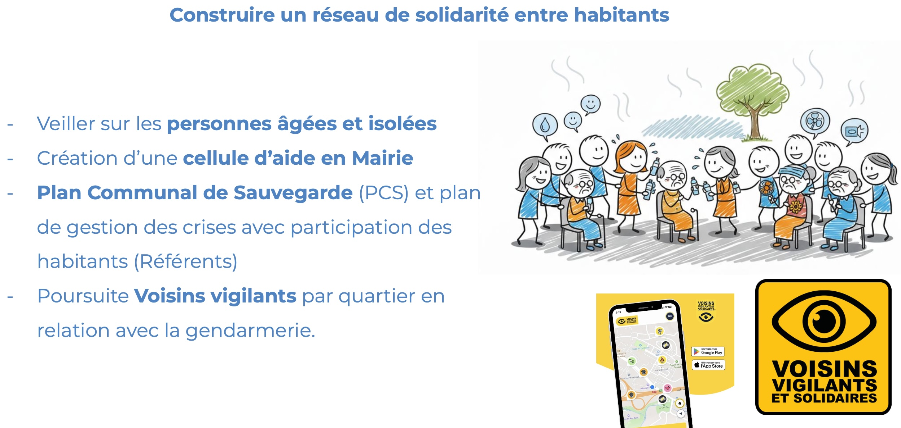
Nous souhaitons créer un réseau de solidarité dans le village, envers les personnes qui en ont le plus besoin : personnes vulnérables et personnes isolées. Nous créerons une cellule d'aide qui aura la liste de ces personnes et sera responsable de veiller sur elles, en les appelant périodiquement. Nous souhaitons encourager la création d'un comité des aînés dans le village, et les encouragerons à participer au dynamisme du village, dans le cadre d'un retour des associations à Courson-Monteloup.
Nous devrons aussi mettre en place le "plan communal de sauvegarde", légalement obligatoire et sous la responsabilité du maire : faire des fiches action en lien avec habitants en cas d'incident grave.
Enfin, nous réactiverons le réseau de voisins vigilants, connus des habitants et en lien avec la gendarmerie, pour la sécurité de notre petite communauté.
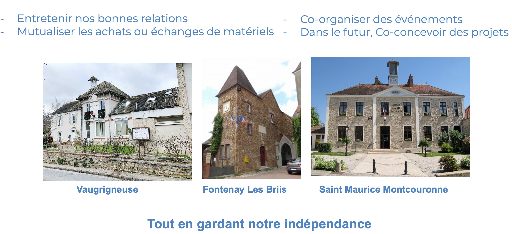
Notre liste entretient d'excellentes relations avec les municipalités amies et voisines. C'est un atout crucial qui nous permettra de co-organiser des événements, d'organiser l'échange de matériel, de mutualiser des achats, et de co-concevoir des projets futurs qui dépassent le cadre de notre simple village mais structureraient notre territoire.
Nous ne le dirons jamais assez : cette collaboration fructueuse avec nos voisins ne remettra jamais l'indépendance de Courson-Monteloup en question.
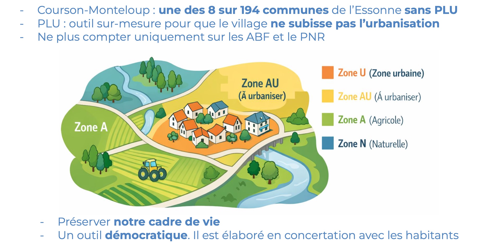
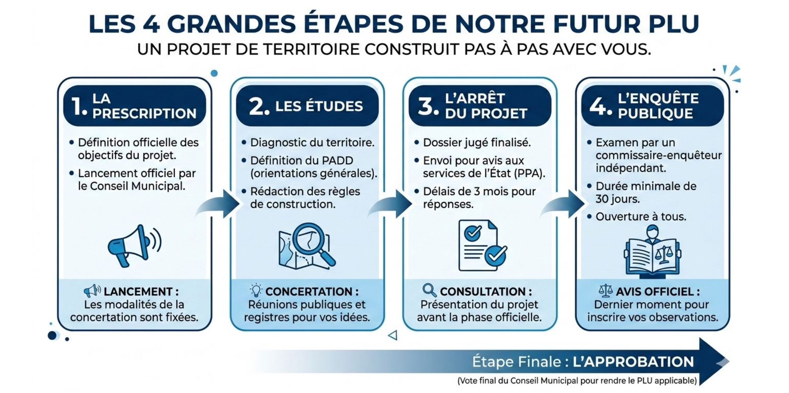
Courson-Monteloup fait partie des dernières communes du territoire à ne pas disposer d'un Plan Local d'Urbanisme (PLU).
Si, jusqu'à présent, les projets de construction sont soumis à l'avis de l'Architecte des Bâtiments de France, force est de constater que l'urbanisation n'est pas entièrement maîtrisée et repose davantage sur des décisions ponctuelles que sur une vision d'ensemble.
Mettre en place un PLU constitue à notre sens une étape essentielle pour l'avenir du village. Le PLU est avant tout un outil de cohérence et d'anticipation. Il permet de définir clairement les règles d'urbanisme, de protéger le caractère du village et de donner à chacun — habitants, porteurs de projets, artisans — une lisibilité claire et équitable sur ce qui est possible ou non.
Grâce au PLU, le village pourra être découpé en différentes zones, en tenant compte de ses spécificités : zones d'habitat, zones agricoles, zones naturelles, secteurs à protéger en priorité.
Ce zonage permettra d'éviter une urbanisation diffuse voire inadaptée, susceptible de dénaturer l'environnement, les paysages et l'identité du village.
Instaurer un PLU, c'est aussi préserver notre cadre de vie : favoriser le maintien d'espaces verts au sein des propriétés, limiter l'artificialisation des sols, protéger les vues, les jardins, les haies, les terres agricoles, et encadrer les nouvelles constructions pour qu'elles s'intègrent harmonieusement au bâti existant.
Enfin, le PLU est un outil démocratique. Il est élaboré en concertation avec les habitants, les acteurs locaux et les institutions compétentes. Il permet à la commune de reprendre la maîtrise de son développement, plutôt que de le subir.
Notre ambition est claire : un développement raisonné, respectueux de l'environnement, du patrimoine et de la qualité de vie.
Nous porterons ce projet avec conviction et engagement, en nous appuyant entre autres sur l'expérience de Christine Richard. Passionnée par l'urbanisme, elle analyse chaque jour les Plans Locaux d'Urbanisme du secteur dans le cadre de son activité professionnelle. Cette connaissance concrète des règles d'aménagement et du terrain nous permettra de réfléchir à un PLU réaliste, utile aux habitants et respectueux de l'identité de notre commune.
Tous ensemble donnons un nouvel élan pour Courson‑Monteloup et faisons rayonner notre village !